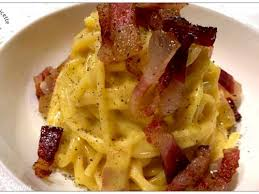

Spaghetti alla carbonara
Ingredienti:
Di seguito riportiamo gli ingredienti per preparare il nostro piatto
- 300gr di pasta (molisana)
- 2 uova
- 2 cucchiai di pecorino
- 4 cucchiai di grana padano
- 100gr di guanciale
Preparazione:
- soffriggere il guanciale taliato a cubetti
- mettere la pasta a cuocere e salare
- rompere le uova e mischiarle col formaggio
- aspettare la cottura della pasta e condire il tutto